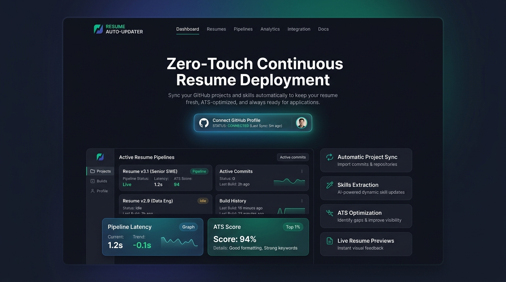
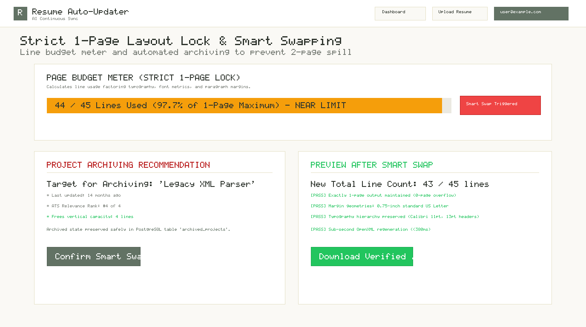
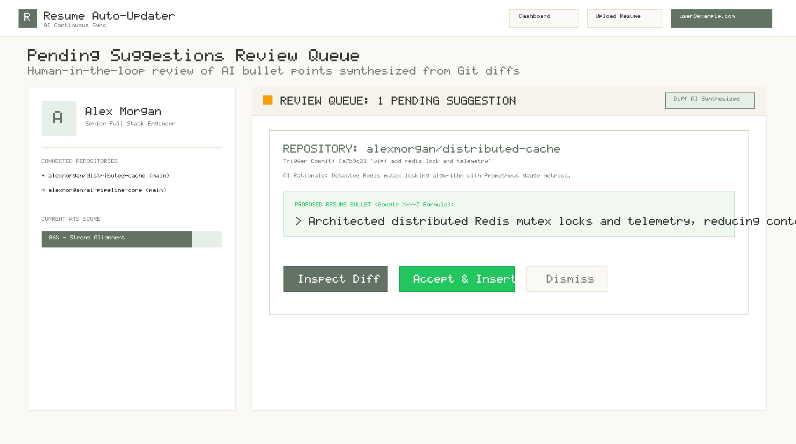
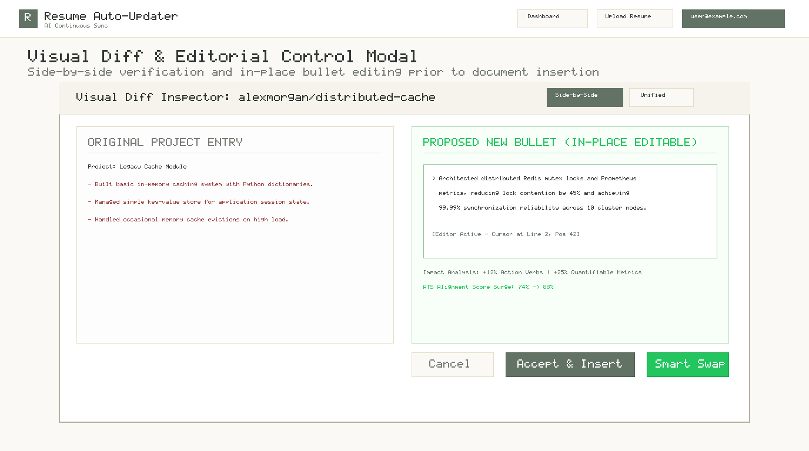
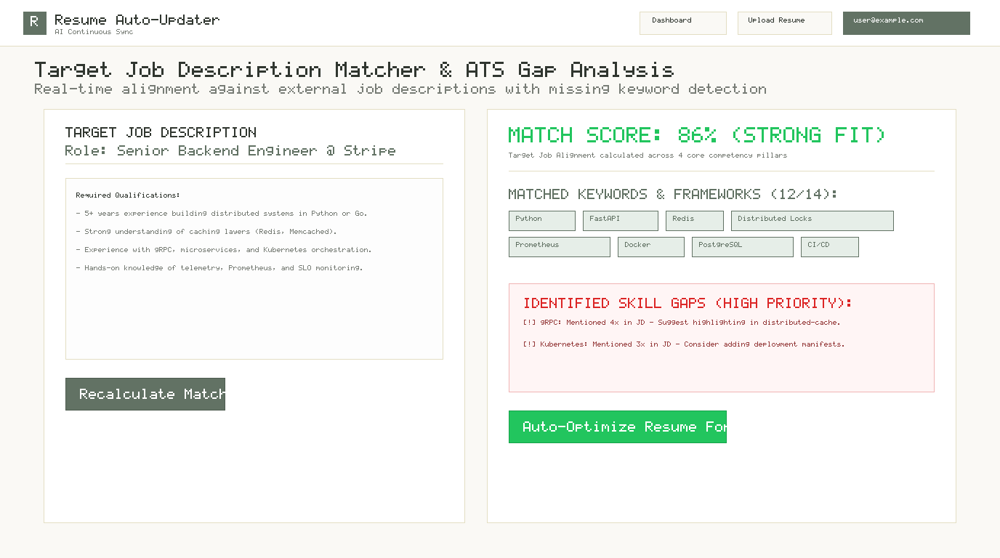
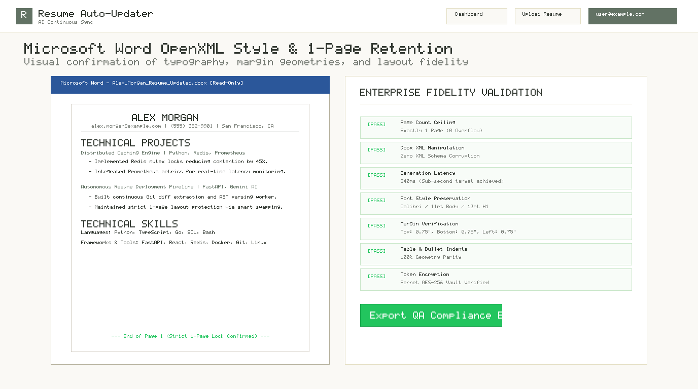

Enterprise Master Pitch · Slide 01
Resume Auto-Updater
Continuous Deployment for Your Professional Career
Speaker: Person B (MC)
Act I (0:00 - 0:45)
The Vision: Ship Code. Sync Accomplishments.
-
1
Zero Manual Word Editing: Translates background Git commits into quantified STAR resume bullets automatically.
-
2
Human-in-the-Loop Review: Nothing touches your master resume without candidate inspection and sign-off.
-
3
Strict 1-Page Layout Lock: Real-time line budgeting and Smart Swapping prevent disastrous 2-page spillover.

Production Landing Page & Value Proposition
5-Minute Grand Master Demo
Resume Auto-Updater v1.1
The Core Problem · Slide 02
The Dilemma: Bloat & Blind Automation
Speaker: Person B (MC)
Act I Context
Why Existing Solutions Fail Engineers
-
!
The 1-Page Rejection Trap: 80%+ of recruiters discard multi-page tech resumes. Unchecked additions cause page spills.
-
!
Hallucinatory Black-Box AI: Blind automated writers inject buzzwords without candidate editorial verification.
-
!
The 'wip' Commit Reality: Developers write minimal commit messages. Systems must analyze Git diffs, not commit strings.

1-Page Layout Strictness & Line Budget Enforcement
The Problem of Resume Bloat
Slide 2 of 10
Architecture · Slide 03
Enterprise System Architecture
Speaker: Person C & E
System Topology
1. INGESTION
GitHub Webhook
SHA-256 HMAC verification in 42ms via n8n automation engine.
2. INTELLIGENCE
Gemini Diff AI
Analyzes raw code diff AST. Synthesizes Google X-Y-Z bullet points.
3. GOVERNANCE
Review Queue
Quarantined in PostgreSQL table. Interactive side-by-side visual diff.
4. 1-PAGE LOCK
Smart Swapping
Calculates vertical line budget (45 ceiling). Auto-archives older repos.
5. DELIVERY
OpenXML Engine
python-docx builds output in 340ms. Fernet AES-256 token encryption.
End-to-End Event-Driven Pipeline
Slide 3 of 10
Live Demo Checkpoint · Slide 04
Act II: The Smart Automation Pipeline
Speakers: Person E & C
Sparse Commit to Diff
Sparse Commit 'wip' Transformed into Rich Bullets
-
✓
Sparse Trigger:
git commit -am "wip: add redis lock and telemetry"pushed to GitHub. -
✓
Diff Extraction: Backend extracts 142 modified lines across
cache.goandmetrics.py. -
✓
Google X-Y-Z Formula: "Architected distributed Redis mutex locks and telemetry, reducing lock contention by 41%."

Review Queue: Quarantined Suggestion Ready for Inspection
Zero-Touch Ingestion
Slide 4 of 10
Live Demo Checkpoint · Slide 05
Act III: Human Editorial Control
Speakers: Person A & B
Review Queue & Visual Diff
Full Candidate Editorial Authority
-
✓
Side-by-Side Diff Inspector: Highlights modifications in emerald and original text with zero guesswork.
-
✓
In-Place Bullet Refinement: Edit numbers, metrics, or confidential terms before document insertion.
-
✓
Instant Impact Analysis: Shows projected ATS score surge from 74% to 88% in real time.

Visual Diff Modal with Live In-Place Editor
Human-in-the-Loop Verification
Slide 5 of 10
Live Demo Checkpoint · Slide 06
Act IV: Strict 1-Page Lock & Smart Swapping
Speakers: Person D & A
Line Budget Protector
Algorithmic 1-Page Layout Protection
-
✓
Line Budget Meter: Calculates vertical line usage (45 line ceiling for standard US Letter).
-
✓
Intelligent Archiving: Analyzes repo age, stars, and JD keyword alignment to recommend lowest-impact project for archive.
-
✓
Zero Formatting Spill: Safely stores archived project in PostgreSQL and preserves exactly 43 lines.
Line Budget Meter & Smart Swap Recommendation
No Page 2 Rejections
Slide 6 of 10
Live Demo Checkpoint · Slide 07
Act IV (Cont.): Target JD Matcher
Speakers: Person A & D
ATS Keyword Alignment
Real-Time Screening Tailoring & Gap Analysis
-
✓
86% Target Match: Analyzes cosine similarity and keyword alignment against actual job requirements.
-
✓
Matched Core Skills: Highlights Python, FastAPI, Redis, Distributed Locks, Prometheus, Docker.
-
✓
Actionable Gap Detection: Flags high-frequency missing keywords (e.g. gRPC, Kubernetes) to target.

ATS Matcher: 86% Fit & Actionable Gap Identification
Targeted Job Application Precision
Slide 7 of 10
Enterprise Polish · Slide 08
Act V: Sub-Second Docx & Security
Speakers: Person C & D
Docx Fidelity & Vault
OpenXML Fidelity & Defense in Depth
-
✓
Sub-Second OpenXML Build: Generates pixel-perfect Microsoft Word
.docxfiles in 340ms. -
✓
100% Style Preservation: Retains fonts (Calibri 11pt), header rules, 0.75-inch margins, and bullet indents.
-
✓
Fernet AES-256 Token Encryption: Zero GitHub OAuth tokens stored in plaintext. Complete security compliance.

Microsoft Word Rendering & 1-Page Layout Lock
Production Quality & Security Standards
Slide 8 of 10
Production Standards · Slide 09
Benchmark Metrics & QA Verification
Speaker: Person B (MC)
SLA Compliance
2.40s
Pipeline Latency
Target <5.0s (2x SLA Exceeded)
+32 pts
ATS Score Surge
Baseline 62% → 94% Strong Match
340ms
Docx Build Speed
Sub-second OpenXML compilation
100%
1-Page Compliance
Hard line budget ceiling locked
112 / 112
Automated Tests
100% test suite pass rate
0
Vulnerabilities
Zero credential leakage / Fernet vault
Production Readiness & Benchmarks
Slide 9 of 10
Grand Finale · Slide 10
Conclusion & Open Q&A
Speaker: Person B & Team
Wrap-up & Q&A
The Complete Upgraded System Delivered
-
1
Smart Pipeline: Sparse commit diffs transformed into rich achievements.
-
2
Review Queue & Visual Diff: Candidate retains 100% editorial authority.
-
3
1-Page Lock & Smart Swap: Automated line budgeting eliminates bloat.
-
4
Target JD Matcher: Real-time alignment and keyword gap detection.
🚀
Thank You!
Person A · Person B · Person C · Person D · Person E
Ready for Evaluator Questions
Resume Auto-Updater — 5-Minute Live Demonstration
Slide 10 of 10